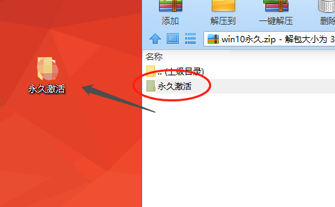
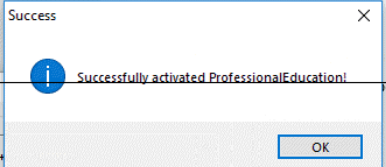
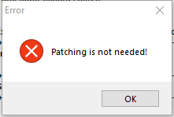
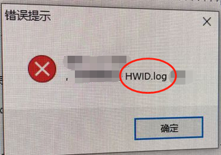

把整个文件夹解压到桌面(无法解压的，推荐使用360解压软件)

提示：
使用部分的工具时，可能会发生误报的情况，工具是绝对安全的，请信任或
暂时关闭安全软件(点击跳转关闭教程)
提示： 使用部分的工具时，可能会发生误报的情况，工具是绝对安全的，请信任或 暂时关闭安全软件(点击跳转关闭教程)
1.
win10许可证教程(永久激活)
1. win10许可证教程(永久激活)
1.把整个文件夹解压到桌面
运行软件-点击patch按钮进行激活

2.运行软件-点击patch按钮进行激活
出现以下情况，说明已经成功（第一次失败，请尝试第二次，第二次也失败的的话，请看）
 
3.出现以下情况，说明已经成功
出现以下情况（弹窗中有HWID.log字样），说明已经失败了，请看 win10失败怎么办？

4.出现以下情况，说明失败了
5.查看激活成功的方法